初次見面
第一次跟大學見面 那天很藍，陽光一如往常的很耀眼。 滿載的期待， 在溫度剛剛好的時候，氤氳而出， 所有的事物，都被陽光灑落的金粉， 輕輕地沾上新的氣息。 或許有點陌生，但別慌張 我知道自己已做好了準備， 新的挑戰開始。
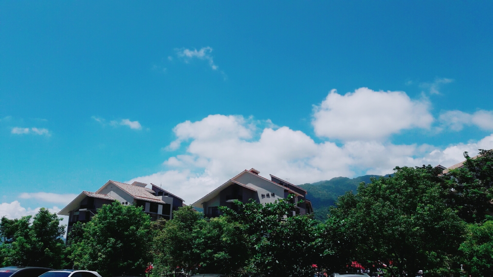
加路蘭
阿美族的甩髮之地。 乾淨的海水不斷拍打著的是太平洋的心跳， 強而有力，如其蘊藏的的生命。 用一隻藍色的筆，從遠方的地平線到近距的腳邊調和深淺， 在陽光的折射下，是毫無保留的純淨的色澤。
 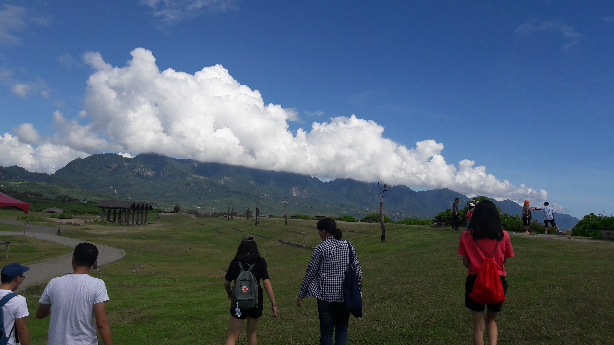
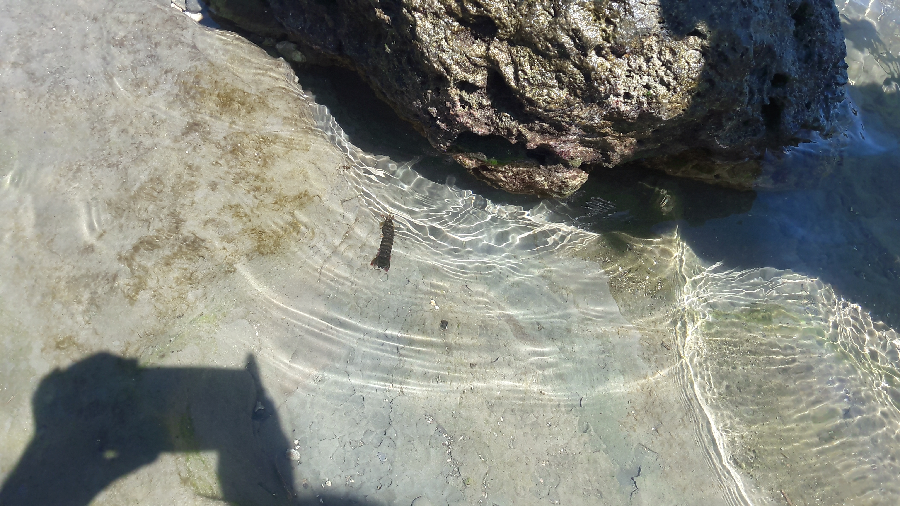
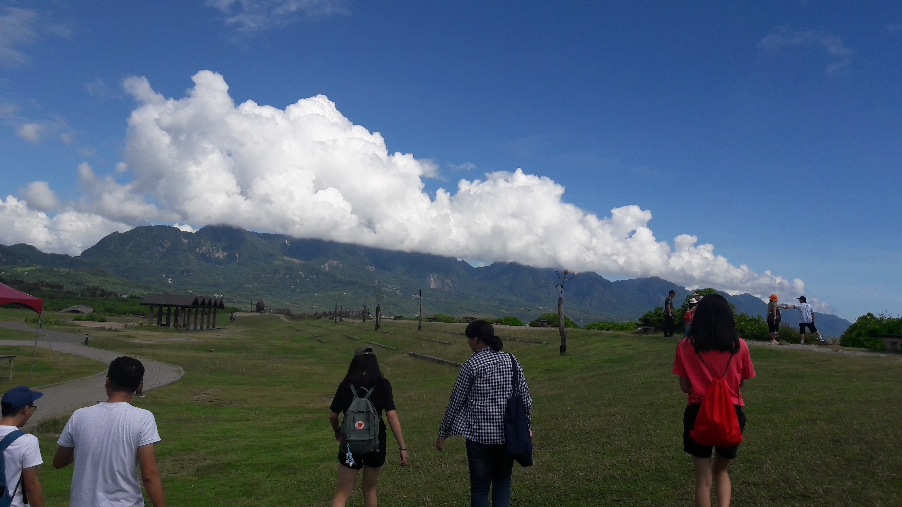
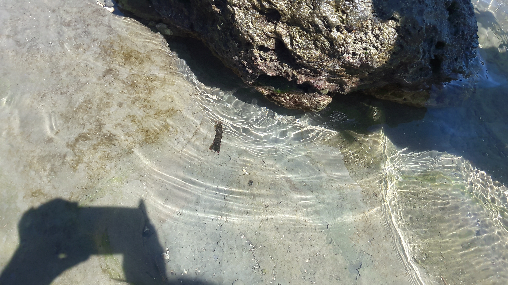
中秋節第一次素烤
跟著月圓而團圓的是室友們的陪伴， 儘管不寂寞，但中秋總想著家， 幸虧，有新鮮的事情吸引著我體驗-素烤， 比想像中的好入口，更吃出蔬菜的清甜。
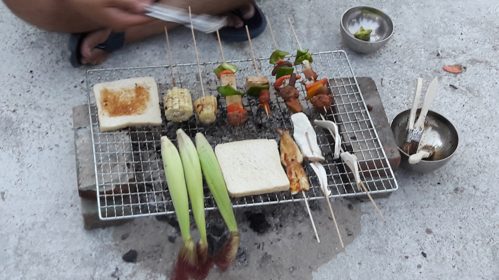第一次上法院
在前往的路上，總按耐不住內心情緒激烈起伏，忍不住想大開眼界。 雖然規模沒有很大，但卻一點都藏不住莊嚴的氣息， 我們幾個人穿上規定服裝，站在台上似乎笑得太開心了(笑) 但不得不說這次機會非常難得，穿上的法袍也有可能只是一生一次了。
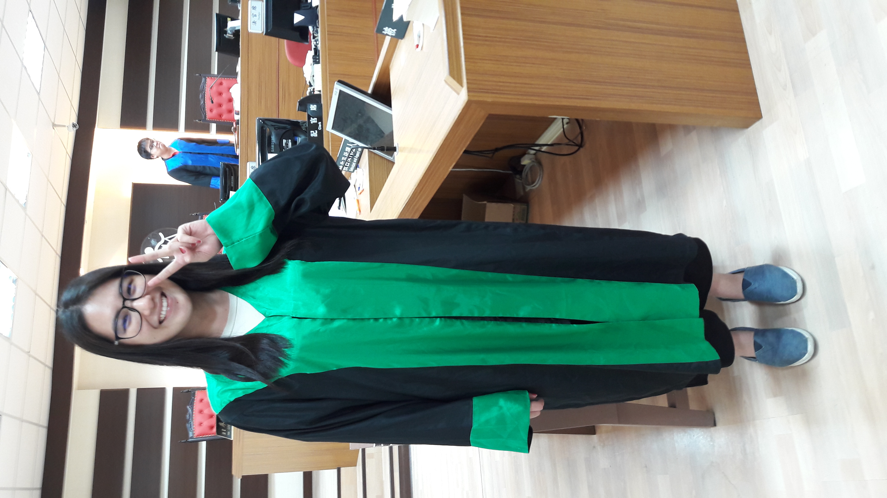 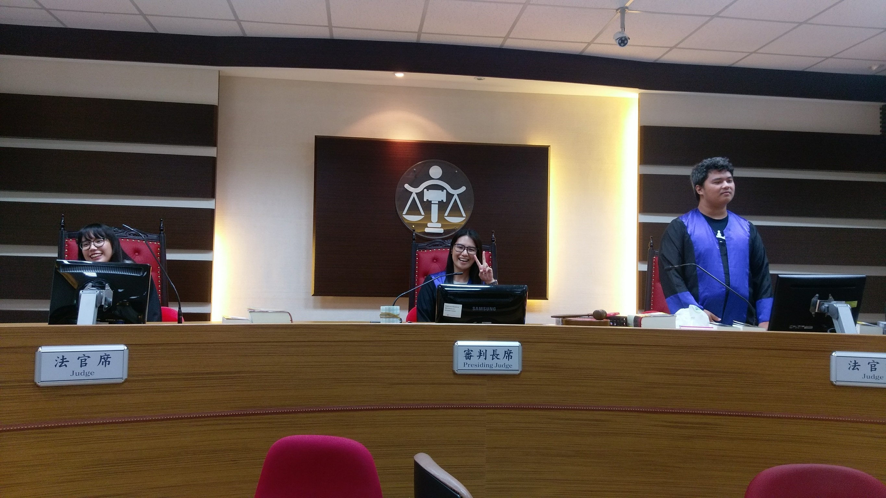到鸞山部落
鸞山，要乘坐小巴才能夠上山的地方。 沿著陡而蜿蜒的山徑，還得攀著藤蔓奮力而上， 但辛苦得有代價，映入眼簾的是一束束聳起的高， 向上延伸，在向外擴展版圖， 這是會走路的樹，而將不斷地走下去。
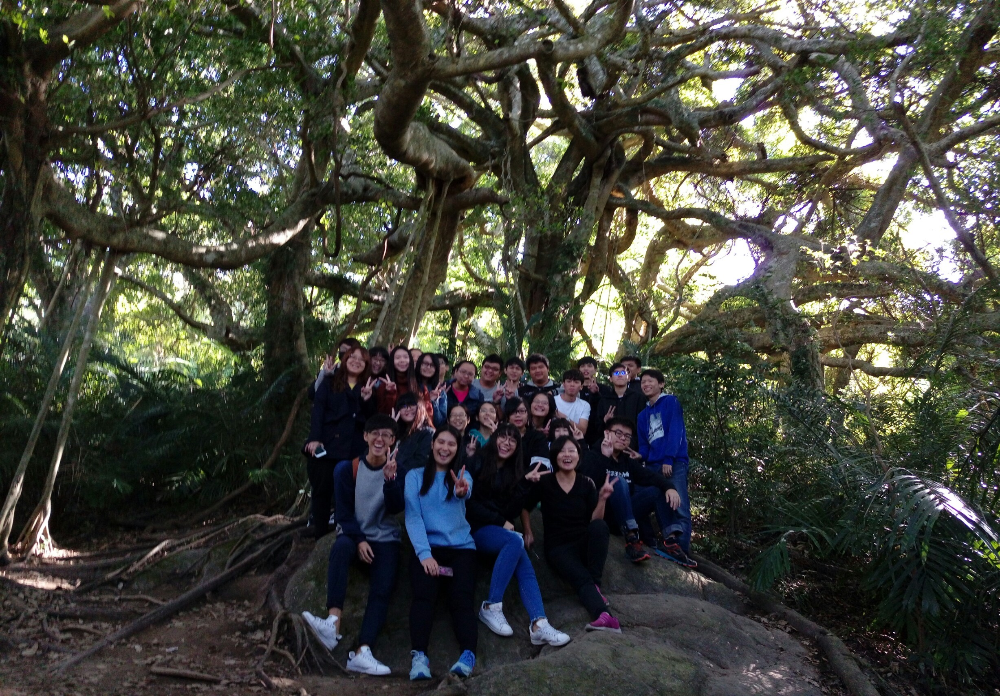
到志航基地
來台東總見得著，湛藍的天空上偶爾掛著幾朵雲外， 也會有幾架整齊排列的戰機，轟轟的呼嘯而過， 這裡是他們起飛與降落的地方， 除了現今正在飛的，在機棚內還豎立著幾台，身經百戰的老兵， 機身儘管經歷了時間的摧殘，但還是掩蔽不住它堅忍不拔的精神。 看著它機身的國徽，讓我想起白先勇先生在台北人裡，所寫的其中一篇-一把青。
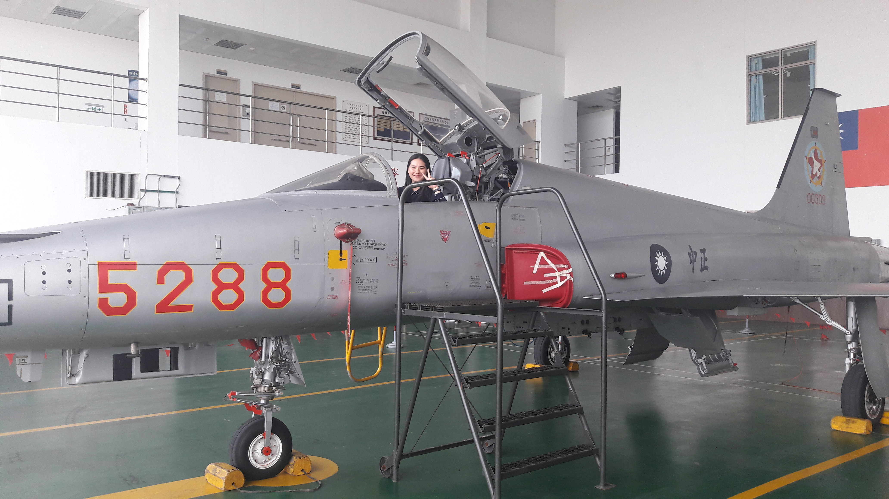1/1鐵花村跨年+三仙台看日出
第一次在人很少的地方跨年，結束之後只睡了一個鐘頭， 就趕在太陽探出頭之前動身，騎了67公里花了2個小時， 又累又冷，海風夾伴著一點浪花，灑到臉上的那刻立即清醒， 那天天公不作美，一層厚重的烏雲就這樣霸道的擋在前面，實在可惜。 但與好朋友一起衝一波，熱血的精神將會是這次寶貴的經驗過程。
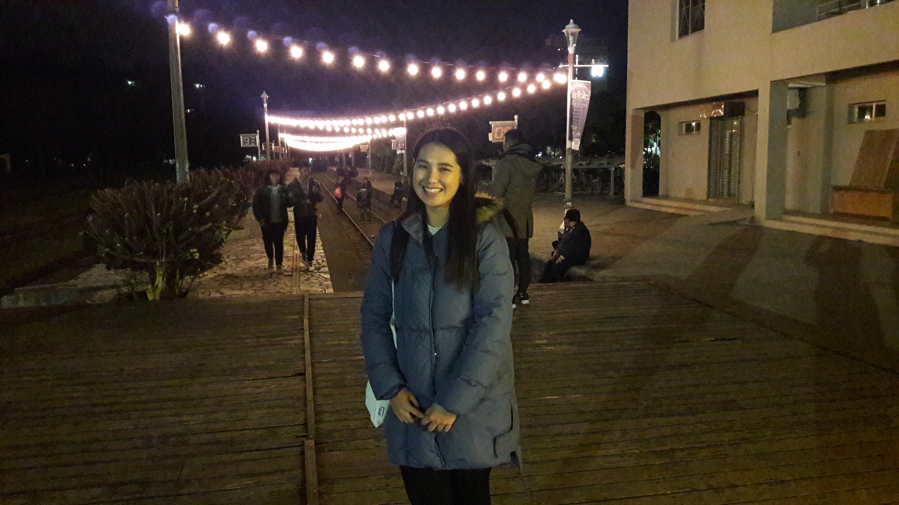
池上伯朗大道油菜花田
趕在最後一檔花期謝幕之前，來朝聖有名的池上花海景象。 田野整齊得如棋盤，道與道之間部參雜任何電線杆的干擾， 一望無際黃色一片，在風的指揮下搖曳生姿， 奶油黃色的花浪，一波波地向我跟前推進。

新東糖廠文化園區
老舊的古式建築，在重新整理之後， 抹上一點顏色，似乎又更顯風韻了， 手中拿著春一支，品嘗出最真實的味道。

榕樹下米苔目
多年前，一個在菜市場旁無名的小攤販， 在安慶街上的榕樹下，滾著熱湯，加入柴魚的湯頭是依些人小時候的記憶， 如今雖景物已非，但人事依在，繼續在大同路上飄出柴魚香的地方，滾著熱湯。

到海端布農族文化館
4、5月是布農族重要祭典的時間-打耳祭 在經歷一番解說之後，才了解打耳祭的意義非凡， 在歷史課本裡倉促的寫了幾句話，都不足以說明其精神。 在文化館裡面，擺設了許多珍貴的布農族老照片， 還有一些布農族任為了家鄉與傳統，在努力找回原本的文化產物， 「以月桃編織出回家的路-Puni」這句話很有意義， 傳統文化在面對現代社會的影響下，原住民青年返鄉的議題對於Puni也是個難題， 最後Puni用這個不論是家人或是文化上，都對她出滿意義的月桃葉，四處追尋傳統技藝努力編織出回家的路。
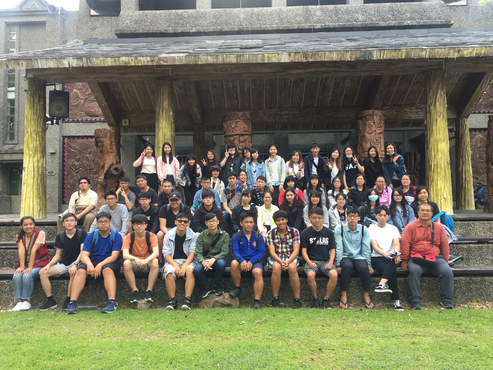 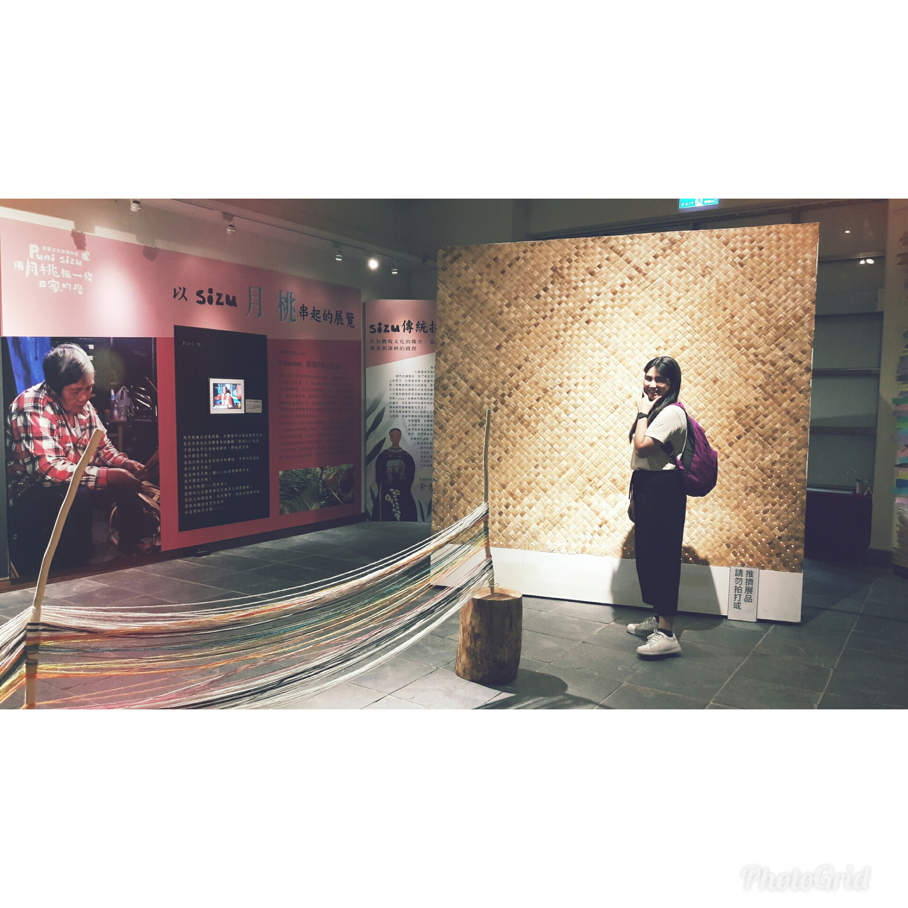
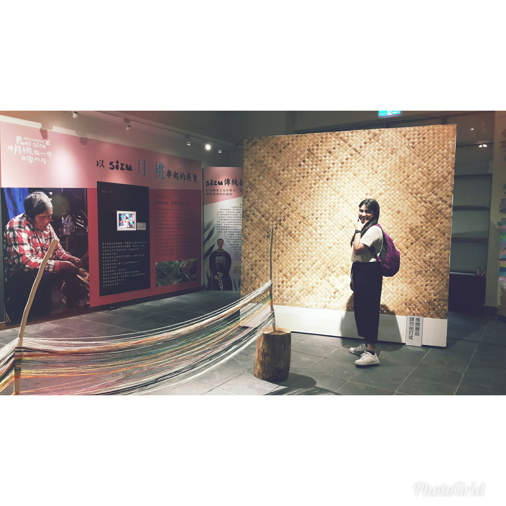